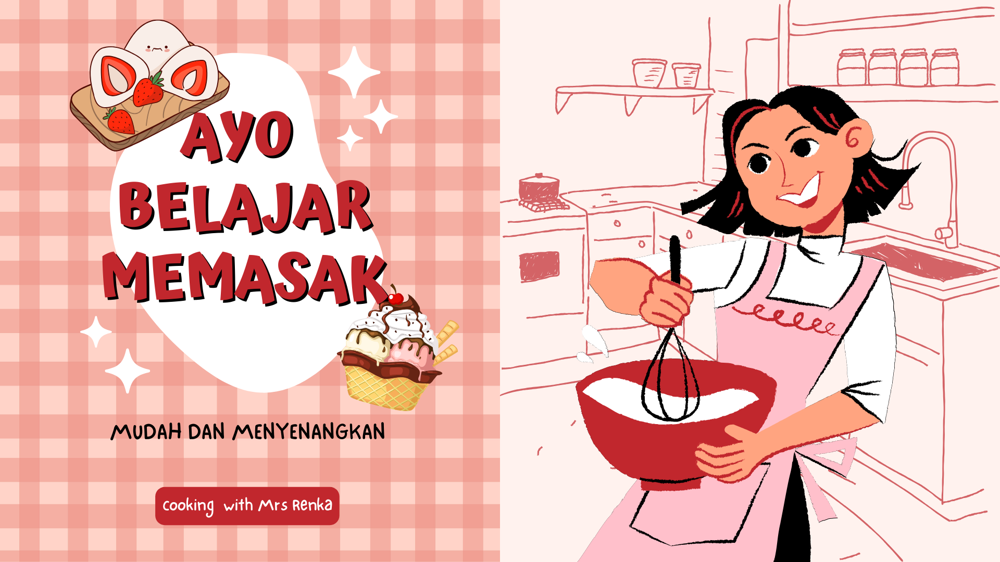

|
HOME | RECIPES | CHEFS | CONTACTS | PORTOFOLIO |
|
|
|||
|  | Mango Pancake Rolls adalah crepes yang digulung seperti lumpia dengan whip cream dan potongan buah mangga didalamnya. Mango Pancake Rolls juga biasa disebut Mini Towel Cake. | Caramel Popcorn merupakan camilan ringan berupa jagung brondong renyah dengan rasa Caramel yang lezat dengan aroma yang menggiurkan. | |
| Potato Cheese Ball adalah olahan kentang dengan keju yang digoreng hingga berwarna keemasan dengan tekstur renyah di luar dan lembut didalamnya. | Milk Pudding with Strawberry Sauce merupakah cold dessert, milk pudding tersendiri memiliki tekstur lembut, dipadukan dengan Strawberry Sauce yang memiliki rasa manis sedikit asam. | ||